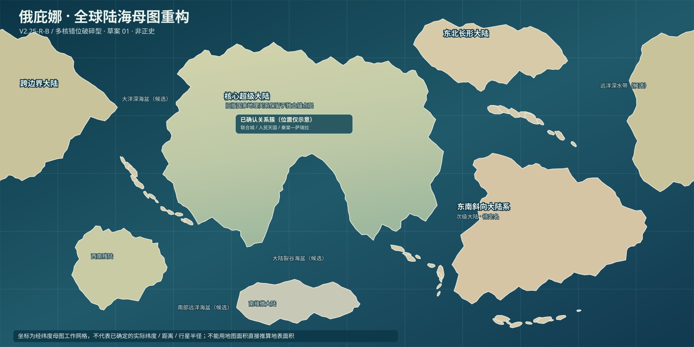

这里是完整一周的2:1等经纬工作画布。只用它来检查构图和示意球体，尚未确认真实经纬度、半径、投影参考系或任何新行政地理。
球面预览 · 正射视角
正在读取已保存的世界母图坐标…
为什么这次和过去不同？
- 世界不再挤在单一画框中：北西侧的长形大陆穿越左右经度接缝，球面上实际连续。
- 大陆有不同尺度与方向：核心超级大陆、斜向次级大陆、长形高纬陆地、微大陆和岛弧并不对称排列。
- 远洋获得连续空间：不强行用所有大陆填满海洋，也不把未确定的25个正式海名强行钉到新坐标。
- 确定地理暂不迁移：联合城—人民天国、秦棠—萨瑞拉、棠溪与南口内湾仍由旧版局部地图保存。母图标记只是提示，不是坐标迁移。
- 数学比例仍需谨慎：平面像素的面积不等于球体地表面积；纬度带、行星半径、海陆板块运动等仍属下一步任务。
现在的目标是验证“这颗星球看起来是否合理”，不是继续堆积局部岸线锯齿。